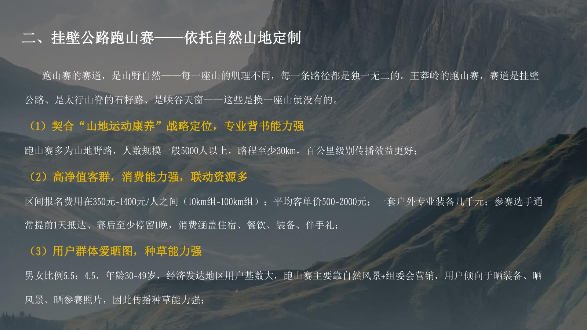

03
03
City Marketing · Media Incubation
让一座城市，
被本地人先讲出来。
项目背景
晋城的难点不是缺少资源，而是如何把古建、太行山水、避暑气候和本地文化组织成一个让游客记得住、愿意来的城市理由。
项目同时覆盖暑期营销、太行人家民宿品牌、王莽岭景区营销与融媒账号孵化。前者解决“怎么让人来”，后者解决“城市内容由谁持续生产、怎样形成长期机制”。
我的工作
独立完成晋城暑期营销方案、太行人家 3.0 品牌方案、个人 IP 孵化建议与媒体人账号运营研究；在合作项目中参与王莽岭暑期营销方案与融媒账号孵化落实建议案的资料研究、方案共创、章节和页面整理。
工作重点不是把所有资源并列罗列，而是分别回答三个问题：城市暑期消费靠什么产品承接，民宿品牌靠什么建立差异，本地媒体人如何通过账号持续生产城市内容。
关键动作
-
把“22℃避暑”升级成“晋城凉方” 从古建穿堂风、药食同源、夏夜摆凉场与新的群众文化出发，形成看、吃、玩、拍的完整暑期体验。
-
把民宿品牌落成可视、可拍、可卖的内容 提出“北方古堡山居第一品牌”与“太行人家·此心安处”，继续拆出统一视觉、短视频 IP 与四季活动。
-
把账号孵化从倡议变成执行机制 研究 50+ 账号启动、种子期到成熟期的考核、行政激励、商业分成、账号确权与退出机制。
方案页预览
展示王莽岭景区策略与个人 IP 孵化机制两组页面。前者说明景区如何把资源变成产品，后者说明城市内容如何形成组织能力。

战略、内容、产品、渠道与品牌联动。

用挂壁公路构建赛事与户外体验。

“康养 + 运动”与五个组合动作。

从为什么要做到如何构建。

种子期、成长期与成熟期。

媒体职能与城市宣传任务。
项目结果
6 份营销 / 品牌 / 研究 / 执行文件
4 个独立方案与研究报告
2 个合作方案参与
复盘
这一段项目群让我理解，城市营销需要同时处理产品、品牌、内容和组织。方案不能只提出一个好概念，还要继续回答游客怎么体验、由谁生产内容、组织如何持续运转。账号孵化之所以需要制度设计，是因为持续生产本身就是城市传播最难的部分。
注：本页仅展示个人参与的工作包、公开方法与脱敏页面。客户内部预算、完整原始文件、未公开经营数据及账号后台材料均未提供。
Next Project
中国主题公园战略营销峰会 →
返回策划能力